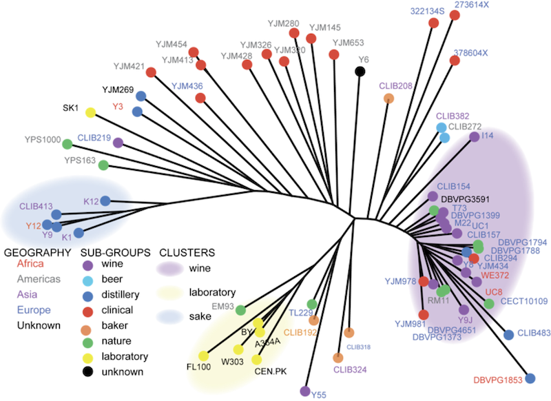
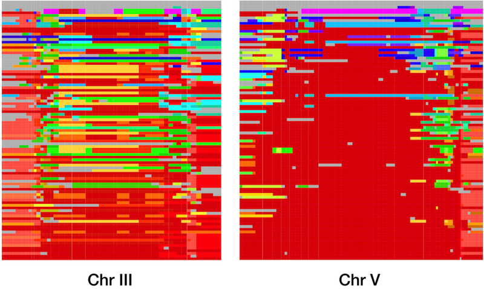

Research
Recent work
As a member of the Childhood Cancer Data Lab of Alex’s Lemonade Stand Foundation, my current work is focused on bringing the power of computational tools and publicly available data to the study of pediatric cancers. I hope that some of these projects will be broadly useful across the pediatric cancer community and beyond.
Some the recent projects I have worked on at the Data Lab include:
ScPCA: The Single-cell Pediatric Cancer Atlas
The Single-cell Pediatric Cancer Atlas is a free public repository of, well, single-cell data from pediatric cancer samples. The data include single-cell and single-nucleus RNA-seq data, with a smattering of spatial RNA-seq data. All of the data were uniformly processed using scpca-nf, an open-source Nextflow workflow that we designed and maintain.
You can read more about the project in our preprint: Hawkins et. al (2024)
OpenScPCA
Following creation of the Single-cell Pediatric Cancer Atlas, the Data Lab began an open analysis of the ScPCA data, which is being conducted with all analyses available through GitHub.
We are interested first in improving annotation of cell types within the project and beyond. Automated cell typing remains fairly limited, especially in the context of cancer cells, which means that the initial steps of annotation are often a limiting factor in data analysis. We welcome outside researchers to contribute to the analysis as well, and even provide small grants for contributions.
OpenPBTA: The Open Pediatric Brain Tumor Atlas
OpenPBTA was our first collaborative open analysis project, organized in collaboration with the Center for Data-Driven Discovery in Biomedicine at Children’s Hospital of Philadelphia. Together, we analyzed a large cohort of pediatric brain tumor samples, including genomics sequencing and RNA-seq data. All of the analysis code is available on GitHub, and the paper describing the work was published as Shapiro et al. (2023).
Earlier academic research
While I am no longer directly active in academic research, my projects from that time are still areas of substantial interest to me, as it is hard to escape the appeal of the projects that brought you to do research for the first time. The vignettes below include highlights from this earlier phase of my career, though the descriptions were written many years ago and do not reflect more recent research that has followed and expanded on many of the topics that I explored during those years.
My academic research focused on the relationship between genetic variation and the path of evolution. Natural selection requires genetic variation to act upon, but the action of selection removes that variation from the population. My work explored the interplay between these forces, taking advantage of genomic data from many individuals and multiple populations in order to create an unbiased picture of genetic variation across a species.
Much of my work involved studying natural populations of organisms that have been long been used as laboratory models: the ‘fruit’ fly Drosophila melanogaster, the nematode Caenorhabditis elegans, and the budding yeast Saccharomyces cerevisiae. Most laboratory studies in these organisms are performed using the progeny of a small number of strains, and often only a single genetic background. While this approach has led to many great advances in biology, understanding the variation present in the species allows us to put laboratory findings in context. At the same time, the variation present in natural populations can be very different from the mutations that are commonly induced in the lab or may cause those laboratory mutations to behave quite differently. This makes natural variants a rich source of new genetic information that we can use to make discoveries that may not be possible using only the standard laboratory strains.
Patterns of variation in S. cerevisiae
The brewers yeast, Saccharomyces cerevisiae, was the first eukaryote to have its genome completely sequenced. It has long been a favorite model organism for the studies in genetics and cell biology, and over time the yeast research community has built fantastic genomic and functional resources that make it an ideal system for the study of evolutionary genetics, both in the lab and in natural populations.

Working with Joseph Schacherer, I examined genomic variation in strains of yeast collected from around the world in different environments, both natural and industrial. These data clearly demonstrated strong population structure in S. cerevisiae, most likely largely driven by strong selection of domestication for winemaking, sake production, and laboratory work. In addition to these major groups, there were also many strains that appeared to be the results of more recent hybridization between groups, including many of the strains which were isolated from human infections (S. cerevisiae is not normally pathogenic, but it can infect immunocompromised individuals). Again, the best way to find out more is to read the original publication: Schacherer et al. (2009) (free version at PMC).
Global selective sweeps in C. elegans
Caenorhabditis elegans is a globally distributed species of nematode that lives in decaying plant material and soil. It has been used as a model for developmental biology and genetics for over 50 years, with work on the species resulting in three Nobel prizes. Almost all of this work was done using a single strain, but there has long been interest in the natural variation and population genetics of the species.
Despite having having large population sizes, which tends to increase diversity, C. elegans was known to have fairly low genetic diversity (a level similar to humans), and it was widely suspected that this low diversity was largely the result of the fact that C. elegans is a selfing hermaphrodite with rare males, a life history that tends to result in greater power for purifying selection. Even mutations with very small negative effects will tend to be eliminated fairly quickly by natural selection, taking with them neutral variation, in a process called background selection.

Together with Erik Andersen and Justin Gerke, I undertook a large-scale study of the global and genomic diversity of C. elegans, using high-throughput sequencing of restriction site associated DNA (RADseq) to examine over 200 wild isolates. We began by confirming the general patterns of diversity that had previously been observed using smaller data sets, but our data allowed us to see patterns that had never been appreciated before. Not only was overall diversity low, but on three of the six C. elegans chromosomes, large regions were completely identical across strains collected from all over the globe. These long blocks of identity are compelling evidence for positive selection, and our simulations indicated that the global spread of these haplotypes occurred only in the past few hundred years.
This strong selection and rapid spread indicates that some allele or combination of alleles in each of these haplotypes was strongly favored in the recent past. Unfortunately, the size of the haplotypes and their high frequency in the population mean that the current data do not help us much in identifying the genes which were under selection. Complete genomic sequences for the strains will help, as will data from more strains, as the global collection of C. elegans continues to expand. These data, especially from strains that do not contain the common haplotypes, will also allow me to explore whether the recent sweeps are unusual within the history of C. elegans, potentially driven by human interactions, or if such sweeps have much more common through the history of the species than we had anticipated.
This project was published as: Andersen et al. (2012) (free version at PMC).